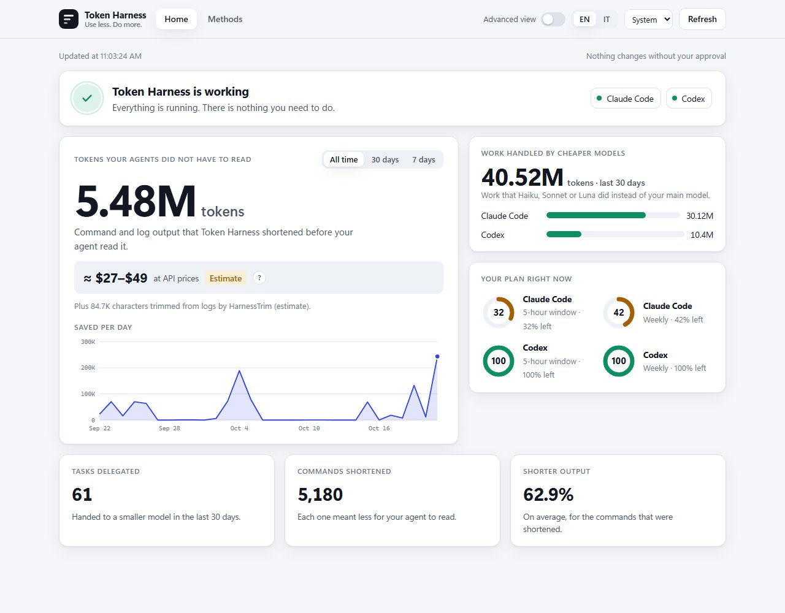
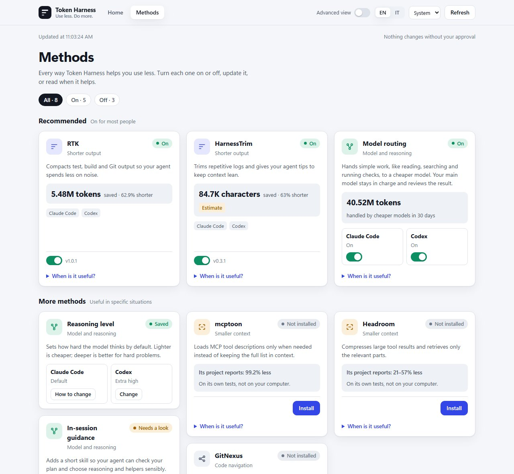

Shorter tool output
Use RTK and HarnessTrim on compatible setups to reduce noisy command output.
For Claude Code and Codex
Save tokens. Get more from your Claude Code and Codex subscriptions. Make your usage go further across 5-hour sessions and weekly allowances, depending on your plan.


Methods. Your optimizers, together in one place.
Control your optimizers from one place, then inspect the evidence behind each result.
Use RTK and HarnessTrim on compatible setups to reduce noisy command output.
Apply native routing guidance to bounded work. Your main agent stays in control.
Measured output, estimates, and current allowance each keep their own place.
Token Harness reviews a compatible setup with you, so the next step stays clear and deliberate.
Pick a project and connect the Claude Code or Codex installation you already use.
Preview a compatible setup and approve it when you’re ready. Opening the app changes nothing.
Use your coding agent as usual. Installed native hooks can keep working after you close the app.
Native desktop packages for Windows, macOS, and Linux. Prefer a terminal? The CLI is there too.
Downloads are hosted on GitHub Releases and included in the same GitHub download counts.
CLI alternative
npm install --global token-harness@latest